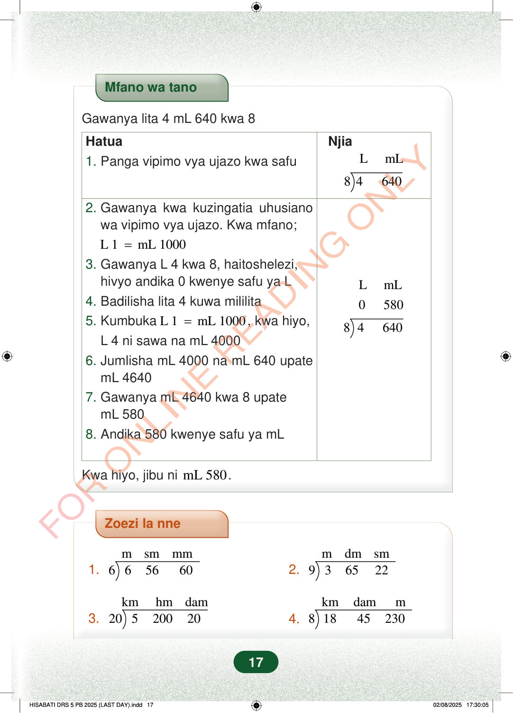

Mfano wa tanoGawanya lita 4 mL 640 kwa 8LmLHatua1.Panga vipimo vya ujazo kwa safuNjia84640LmL0580846402.Gawanya kwa kuzingatia uhusianowa vipimo vya ujazo. Kwa mfano;L 1mL 1000=3.Gawanya L 4 kwa 8, haitoshelezi,hivyo andika 0 kwenye safu ya L4.Badilisha lita 4 kuwa mililita5.KumbukaL 1mL 1000=, kwa hiyo,L 4 ni sawa na mL 40006.Jumlisha mL 4000 na mL 640 upatemL 46407.Gawanya mL 4640 kwa 8 upatemL 5808.Andika 580 kwenye safu ya mLKwa hiyo, jibu nimL 580.Zoezi la nne1.msmmm6656602.mdmsm9365223.kmhmdam205200204.kmdamm8184523017
Mfano wa tano
Gawanya lita 4 mL 640 kwa 8
L mL
Hatua 1. Panga vipimo vya ujazo kwa safu Njia
8 4 640
L mL
0 580
8 4 640
2. Gawanya kwa kuzingatia uhusiano wa vipimo vya ujazo. Kwa mfano; L 1 mL 1000 = 3. Gawanya L 4 kwa 8, haitoshelezi, hivyo andika 0 kwenye safu ya L 4. Badilisha lita 4 kuwa mililita 5. Kumbuka L 1 mL 1000 = , kwa hiyo, L 4 ni sawa na mL 4000 6. Jumlisha mL 4000 na mL 640 upate mL 4640 7. Gawanya mL 4640 kwa 8 upate mL 580 8. Andika 580 kwenye safu ya mL
Kwa hiyo, jibu ni mL 580 .
Zoezi la nne
1. m sm mm 6 6 56 60 2. m dm sm 9 3 65 22
3. km hm dam 20 5 200 20 4. km dam m 8 18 45 230
17
Mfano wa kugawanya lita 4 na mililita 640 kwa 8 kwa hatua. Inaonyesha kuwa lita 4 hubadilishwa kuwa mililita 4,000, kisha 4,640 ÷ 8 = mililita 580.Mfano wa tanoGawanya lita 4 mL 640 kwa 8HatuaNjia1. Panga vipimo vya ujazo kwa safu2. Gawanya kwa kuzingatia uhusiano wa vipimo vya ujazo.Kwa mfano;L 1 = mL 10003. Gawanya L 4 kwa 8, haitoshelezi, hivyo andika 0 kwenye safu ya L4. Badilisha lita 4 kuwa mililita5. Kumbuka L 1 = mL 1000, kwa hiyo, L 4 ni sawa na mL 40006. Jumlisha mL 4000 na mL 640 upate mL 46407. Gawanya mL 4640 kwa 8 upate mL 5808. Andika 580 kwenye safu ya mLKwa hiyo, jibu ni mL 580.